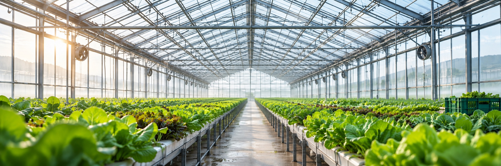
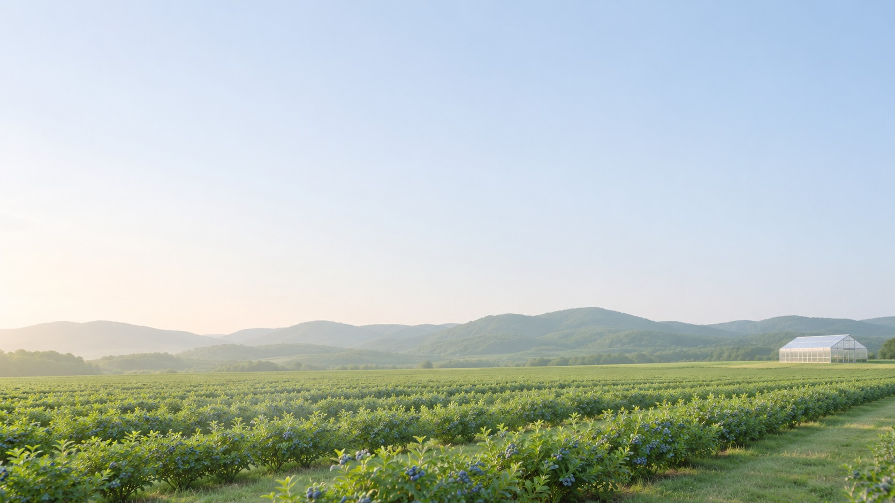
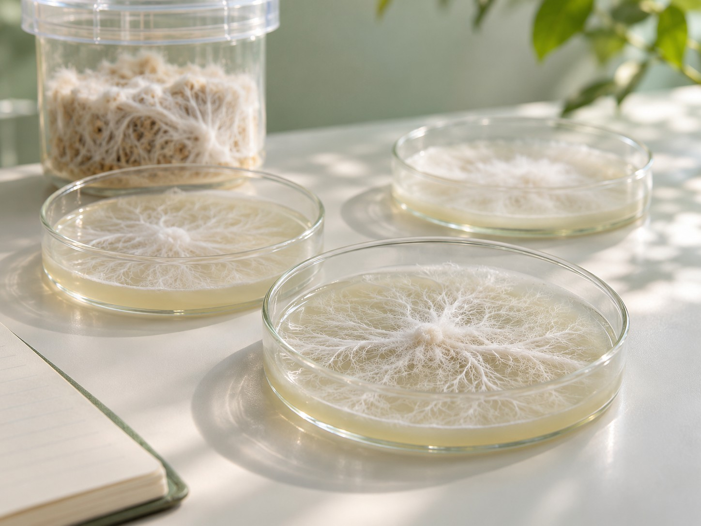
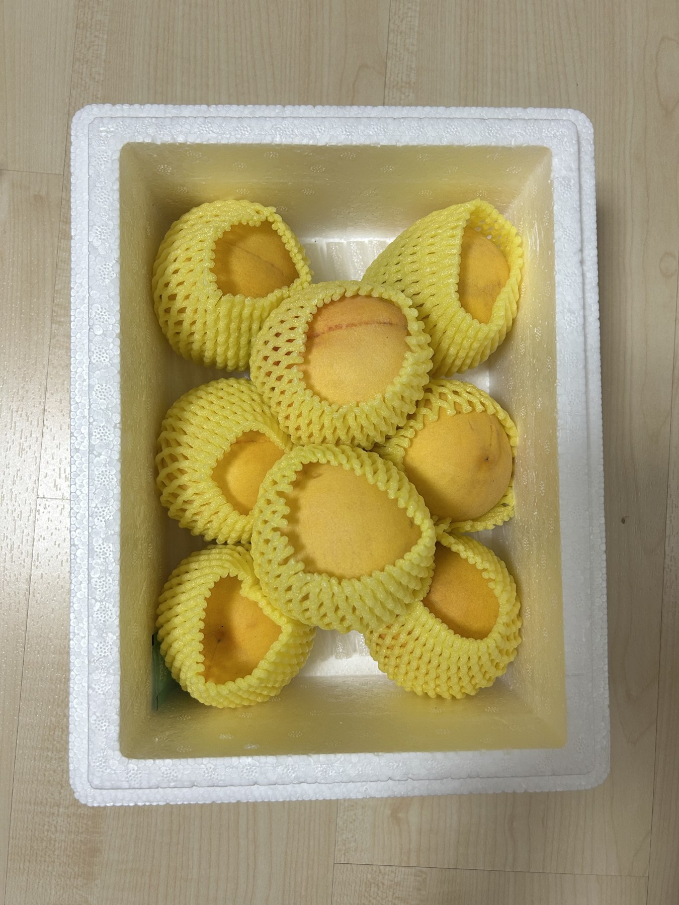

농업에서 시작한 식품·바이오 기업
건강한 일상을 위해,
↓
건강한 일상을 위해,
농업의 가능성을 연구합니다.
직접 기르는 농업에서 버섯의 유효성분 발굴과 식품 소재화까지.
영글어농장은 생산 현장의 경험을 연구로 이어갑니다.
영글어농장
직접 기르는 일에서,
새로운 가치를 찾는 일로.
2008년 시작한 농업의 경험에 가공과 연구를 더합니다.
원물을 이해하고, 일상에서 활용할 수 있는 식품으로 연결합니다.

사업 분야
생산의 경험이,
다음 연구의 바탕이 됩니다.

제품
재배와 연구의 경험을
다양한 식품으로.


해외 바이어 상담은 동결건조 과일칩과 머쉬라이스칩을 중심으로 진행합니다.
제품·공급 문의

바이오 연구
원물의 성분을 이해하고,
식품 소재로 이어갑니다.
버섯 생산과 균사체 배양에서 출발해 베타글루칸·코디세핀·에리나신 등의 성분을 연구합니다.
연구 기반
유효성분 연구
특허·분석 자료
향후 연구 방향
영글어농장의 특장점
현장에서 쌓은 경험,
자료로 확인하는 신뢰.
우리가 걸어온 방향
원물을 기르고,
그 안의 가치를 발견합니다.
